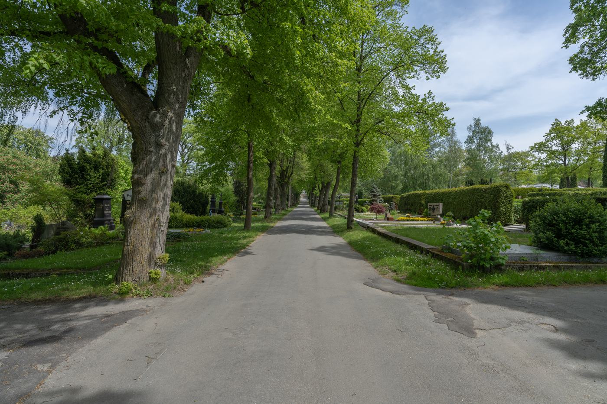

Bestattungen in Gattendorf, Hof und Umgebung
Am Ende der Reise gut ankommen.
Der Abschied von einem Menschen braucht einen würdigen Rahmen. Wir begleiten Sie persönlich, einfühlsam und bezahlbar und nehmen Ihnen die Formalitäten ab.
Ein Mensch ist verstorben
Was ist zuerst zu tun? Zwei Schritte. Den Rest übernehmen wir.
Der erste Moment ist oft von Schock und Trauer geprägt. Das ist normal. Sagen Sie uns, wo der Todesfall eingetreten ist:
-
1
Todesbescheinigung
Rufen Sie zuerst einen Arzt, nach Möglichkeit den Hausarzt. Ist er nicht erreichbar, wenden Sie sich an den ärztlichen Bereitschaftsdienst 116 117. Der Arzt stellt die Todesbescheinigung aus.
Darum kümmert sich die Verwaltung des Hauses automatisch. Sie müssen hier nichts veranlassen.
-
2
Uns benachrichtigen
Spätestens jetzt rufen Sie uns an, Tag und Nacht, auch an Sonn- und Feiertagen. Wir kommen zu Ihnen und besprechen alles Weitere in Ruhe.
0173 102 83 68 -
3
Standesamt, Friedhof, Kirche
Der Sterbefall muss spätestens am folgenden Werktag beim Standesamt angezeigt werden. Das übernehmen wir für Sie, ebenso alle Termine mit Friedhofsverwaltung und Kirche.
So lange dürfen Sie den Verstorbenen zu Hause behalten, um in Ruhe Abschied zu nehmen, wenn Sie das möchten.
Auch nach einem Tod im Krankenhaus oder Altersheim kann der Verstorbene zum Abschiednehmen noch nach Hause gebracht werden.
- Die engsten Angehörigen benachrichtigen
- Wohnung versorgen: Haustiere, Pflanzen, ggf. Strom, Gas, Wasser
- Testament, Vorsorgevertrag, Organspende- oder Feuerbestattungs-Erklärung suchen
Welche Dokumente brauchen Sie?
Zwei Angaben, und Sie sehen genau, was für das Standesamt nötig ist. Fehlt etwas, besorgen wir es gern für Sie.
0 Dokumente
Unsere Leistungen
Ein fester Ansprechpartner. Kein anonymes Institut.
Zwischen Tod und Beisetzung sind viele Fragen zu klären. Wir verstehen uns als persönlicher Berater und Helfer, in unserem Institut oder bei Ihnen zu Hause.
01Beratung in allen Bestattungsfragen
Ihre Wünsche stehen im Vordergrund, ob unverbindliche Beratung, Vorsorgeplanung oder die Durchführung einer angemessenen Bestattung. Vor und nach der Bestattung sind wir mit unserer Erfahrung an Ihrer Seite.
02Überführung
Die Überführung erfolgt gesetzlich vorgeschrieben im Bestattungsfahrzeug, spätestens 36 Stunden nach Eintritt des Todes, vom Sterbeort zum Friedhof oder Krematorium, auf Wunsch auch ins Ausland.
03Versorgung des Verstorbenen
Hygienische Versorgung am Sterbeort, Ankleiden mit eigener Kleidung oder Sterbekleidung, auf Wunsch kosmetische Behandlung. Auch thanatopraktische Versorgung (Modern Embalming) ist möglich, etwa für Überführungen ins Ausland.
04Organisation der Trauerfeier
- Termine mit Friedhof, Pfarrer oder Trauerredner abstimmen
- Dekoration und Beleuchtung der Feierhalle
- Kränze und Blumen entgegennehmen und aufstellen
- Kondolenzlisten und Übertragungsanlage betreuen
- Abstimmung mit Vereinen, Beisetzung durch unsere Sargträger
05Erledigung aller Formalitäten
- Dokumente aus Krankenhaus, Heim oder vom Arzt besorgen
- Sterbeurkunden beim Standesamt beantragen
- Rentenabmeldung, Krankenkasse, Versicherungen
- Kündigung von Verträgen, Abos, Mitgliedschaften, Rundfunkbeitrag
- Todesanzeigen und Trauerdrucksachen
06Trauerbegleitung der Hinterbliebenen
Wir sind auch nach der Beisetzung für Sie da: mit Gesprächen, Zeit und Beistand, damit Sie die neue Lebenssituation Schritt für Schritt annehmen können.
07Blumenschmuck & Trauerdekoration
Wir bestellen Sarg- und Urnenschmuck, Kränze und Gestecke und gestalten die Trauerdekoration im Sinne des Verstorbenen und der Angehörigen.

Bestattungsarten
Ein Abschied, der zum Menschen passt.
Art und Ort der Bestattung richten sich nach dem Willen des Verstorbenen. Gab es keine Wünsche, entscheiden die Angehörigen. Wir helfen bei der Wahl.

Erdbestattung
Der Sarg wird auf einem Friedhof beigesetzt, meist am letzten Wohnort oder am Wohnort der Angehörigen. Die traditionelle Form in Mitteleuropa, rund 60 % aller Beisetzungen.
- Erdwahlgrab
- Lage frei wählbar, Nutzungsrecht verlängerbar, auch als Familiengrab, Ruhefrist meist 25 bis 40 Jahre.
- Erdreihengrab
- Lage vom Friedhof vorgegeben, für einen Verstorbenen, meist günstiger als ein Wahlgrab.

Feuerbestattung
Nach der Einäscherung, zum Beispiel im Krematorium Hof, wird die Urne in einer Urnenwahl- oder Urnenreihenstelle, einem Kolumbarium oder anonym beigesetzt.
Wichtig: Eine Feuerbestattung braucht eine schriftliche Willenserklärung des Verstorbenen oder der nächsten Angehörigen, zum Beispiel: „Ich wünsche, nach meinem Tode eingeäschert zu werden“, mit Datum und vollständiger Unterschrift. Im Krematorium findet zudem eine zweite Leichenschau statt.
Seebestattung
Nach der Trauerfeier am Heimatort wird die Asche in einer wasserlöslichen Seeurne nach seemännischem Brauch in Nord- oder Ostsee beigesetzt, auf Wunsch auch in anderen Meeren. Angehörige können an Bord dabei sein.
Voraussetzung: eine besondere Verbundenheit zur See und eine schriftliche Begründung. Den Antrag auf Befreiung vom Friedhofszwang stellen wir für Sie.
Checkliste zur Bestattungswahl
Diese Fragen helfen, die passende Form zu finden. Klicken Sie an, was Sie bereits wissen.
Offene Fragen besprechen wir gern mit Ihnen: 0173 102 83 68
Kosten
Würdevoll, aber bezahlbar.
Eine einfache Beerdigung kostet in Deutschland im Durchschnitt knapp 7.000 Euro, ohne Grabstein und Grabpflege. Die Spanne ist groß: von rund 2.000 Euro für eine schlichte anonyme Feuerbestattung bis 25.000 Euro und mehr.
Unser Anspruch: jedem eine würdevolle Bestattung zu ermöglichen, die bezahlbar bleibt. Sie erhalten vorab einen klaren Kostenvoranschlag.
Kostenvoranschlag anfordernWoraus sich die Kosten zusammensetzen
- FriedhofGrabstelle, Gebühren, Trauerhalle
- BestatterSarg oder Urne, Überführung, Versorgung, Formalitäten
- SteinmetzGrabstein oder Grabmal
- FriedhofsgärtnerGrabanlage und Grabpflege
Durchschnittswerte für Deutschland. Ihre tatsächlichen Kosten hängen von Bestattungsart, Ort, Grabart und Leistungsumfang ab.
Vorsorgeberatung
Zu Lebzeiten regeln, was Ihnen wichtig ist.
Mit einem Vorsorgeauftrag legen Sie schon heute fest, wie Ihre Bestattung einmal aussehen soll. Das entlastet Ihre Familie und gibt besonders Alleinstehenden die Sicherheit, dass ihre Wünsche erfüllt werden. Dazu erstellen wir einen Kostenvoranschlag auf heutiger Preisbasis.
Vertrauliches Gespräch vereinbaren- OrtAuf welchem Friedhof und in welchem Grab
- GlaubeNach welcher religiösen oder weltanschaulichen Zugehörigkeit
- AbschiedWie die Trauerfeier gestaltet werden soll
- AnsprechpartnerWelche Person später für uns da ist
- FinanzierungWie die Kosten gedeckt werden können
„Und doch ist Einer, welcher dieses Fallen unendlich sanft in seinen Händen hält.“
Rainer Maria Rilke
Über uns
Fürsorgliches Geleit im Trauerfall.
Getreu diesem Gedanken begleiten wir Menschen, die einen lieben Angehörigen verloren haben. Aus jahrelanger Erfahrung im Bestattungswesen sind wir Ihr Berater in allen Fragen, von der Vorsorge bis zur Traueranzeige. Im Mittelpunkt stehen immer die Wünsche des Verstorbenen und seiner Familie.
Wir erledigen sämtliche Formalitäten, ob der Todesfall in der Wohnung, im Krankenhaus oder im Altersheim eingetreten ist, und stimmen alle Termine mit Kirche und Friedhofsverwaltung ab.
„Wir haben es uns zur Aufgabe gemacht, jedem eine würdevolle, aber dennoch bezahlbare Bestattung zu ermöglichen.“
Kontakt
Wir sind für Sie da. Tag und Nacht.
- E-Mailinfo@lang-bestattungen.de
- AdresseKirchweg 2
95185 Gattendorf
Beim Laden der Karte werden Daten an Google übertragen.